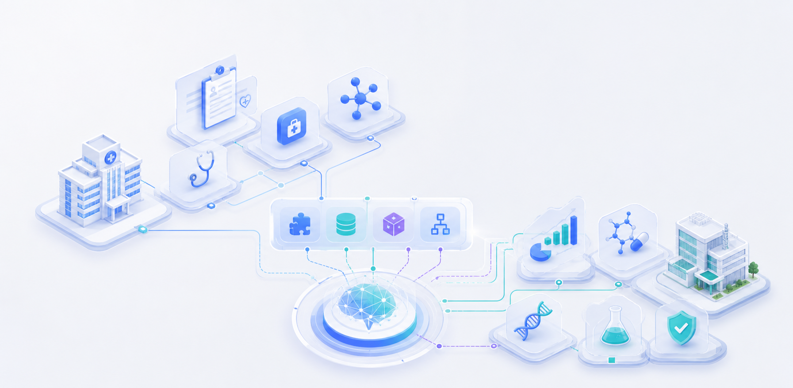

Industries
覆盖多行业，赋能智能化转型

医疗行业场景应用详解
参考 AI 医生助手 Skills 与 GBI 医药情报 Skills 方案，将医疗行业拆分为医院与药企两类场景， 通过可复用 Skills 连接知识库、业务工具和行业流程，沉淀为可交付的医疗行业 Agent。
医院方向
DuMate + AI 医生助手 Skills
面向医生、患者、医院管理与医联体协同，从“Ask AI”升级到“Do AI”，覆盖诊前、诊中、诊后和院内知识协同。
诊前就医助手
医生 Copilot
智能病历生成
医疗知识问答
临床辅助决策
医学报告解读
患者健康管家
药企方向
DuMate + GBI 医药情报 Skills
面向 BD、医学、市场、战略与研发团队，连接医药情报数据库和行业 Agent，提升情报检索、分析与报告交付效率。
新药项目快读筛选
管线与适应症分析
申报审评动态追踪
全球临床试验洞察
行研资讯监测
竞品战略报告生成
接入院内知识、医学资料与医药情报数据源，形成可追溯的专业问答与分析依据。
将问答、检索、生成、分析和报告输出串成完整任务链路，减少人工反复整理。
面向医生、患者、医学、BD、市场、研发等角色提供差异化 Skills 组合。
将典型医疗与药企场景沉淀为行业模板，支持多客户、多团队快速复用。